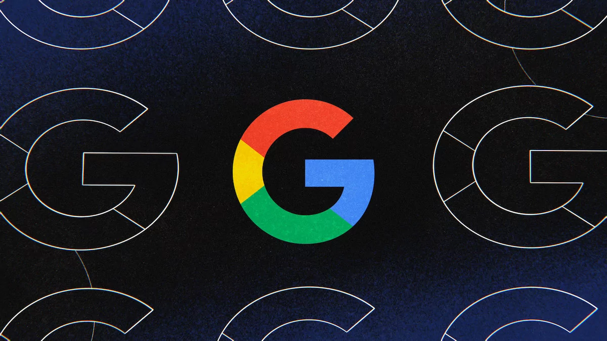

|  |
БОЛЬШЕ НИКАКИХ СТРАНИЦ ПОИСКА: GOOGLE БУДЕТ ЗАГРУЖАТЬ ВЫДАЧУ НЕПРЕРЫВНОЙ ЛЕНТОЙ |
Состоялось историческое событие — разработчики поисковой системы Google официально заявили, что теперь в поисковой выдаче гиганта не будет привычного списка страниц с вариантами веб-сайтов. Вместо этого компания будет загружать контент, соизмеримый с шестью оригинальными страницами выдачи, в формате непрерывной ленты результатов. И только в том случае, если пользователь прокрутит все эти шесть виртуальных страниц до конца, в интерфейсе поисковой системы появится кнопка
«Подробнее» для поиска за пределами вышеперечисленного контента. Стоит сказать, что Google аналогичным образом уже поступала в прошлом году.
Правда, тогда речь шла про мобильное приложение поиска, которое тоже получило непрерывную прокрутку контента вместо постраничной поисковой выдачи, к которой многие привыкли. Теперь аналогичное решение достигло и десктопных систем. И хотя сейчас разработчики Google заявляют, что нововведение будет для начала внедряться исключительно в англоязычный поиск на территории США, вскоре аналогичный дизайн интерфейса появится у всех. Соответственно, теперь интерфейс поисковой системы больше похож на социальные сети, где добраться до условного конца ленты просто невозможно.
Причин для реализации такого дизайна интерфейса предостаточно. Дело в том, что в Google часто заявляли, что большинство пользователей поисковой системы при поиске необходимого контента просматривают до четырёх страниц выдачи, но не более того. При этом чаще всего пользователь никогда не переключается даже на вторую страницу, ограничиваясь выдачей на первой же странице поиска. Теперь же разделения между страницами не будет, так что пользователь будет просматривать больше вариантов веб-сайтов под конкретный запрос, потенциально потребляя больше контента. Это даст Google возможность дополнительного заработка, а веб-сайтам с третьей по шестую страницы — больше шансов получить читателя.
Впрочем, стоит понимать, что алгоритмы поисковой выдачи не изменились — система всё ещё показывает сначала веб-сайты с наиболее релевантными ответами под конкретный запрос, просто формат демонстрации ответов слегка изменили. Это значит, что пользователь всё равно будет смотреть на первые пять-десять веб-сайтов в поисках ответа и никто не гарантирует, что кто-то действительно будет листать страницу до конца в поисках кнопки «Подробнее». |
|
КАКОЙ ТЕЛЕФОН КУПИТЬ НА 2023 ГОД: РЕЙТИНГ ЛУЧШИХ МОДЕЛЕЙ ПОД ЛЮБОЙ БЮДЖЕТ |
Маркетологи производителей и консультанты в магазинах всегда нацелены на людей, не слишком хорошо разбирающихся в технике. В преддверии новогодних праздников всё усугубляется, ведь компании завлекают ещё и громкими скидками с впечатляющими акциями — выбрать подходящий и действительной хороший, но недорогой телефон ещё труднее. В этой статье я решил собрать про три лучших модели в каждом из ценовых сегментов, любую из них можно рассматривать к покупке среднестатистическому пользователю. Смартфоны подбирал с акцентом на сбалансированность характеристик, с учётом отзывов обзорщиков и с оглядкой на реалии современного рынка. |
 |
ЭТО НЕ ШУТКА: MICROSOFT ПРЕДЛОЖИЛА SONY 10 ЛЕТ РЕЛИЗА CALL OF DUTY НА PLAYSTATION |
Некоторое время назад руководство компании Microsoft анонсировало невероятного масштаба сделку — гигант решил приобрести Activision Blizzard за внушительную сумму в 68,7 миллиарда долларов. Правда, сделка оказалась довольно трудной — вскоре регулирующие органы сразу нескольких стран решили изучить приобретение крупнейшей игровой компании на предмет монополии, которую могла получить Microsoft вместе с правами на игровые франшизы. И, вероятно, ключевую роль в этом вопросе сыграла компания Sony, которая заявила, что покупка издателя даст Microsoft возможность монополизировать шутер Call of Duty, у которого нет конкурентов на рынке.
Как бы это не звучало смешно из уст руководства японского гиганта, Sony опасается, что уникальное право на владение Call of Duty позволит Microsoft в будущем сделать игру эксклюзивной для консолей Xbox, тогда как на платформе PlayStation популярная франшиза выходить уже не будет. Это при том, что львиная доля медиатеки игр Sony — эксклюзивы. Но обеспокоенность Sony передалась на государственные органы регулирования, которые застопорили сделку. Некоторое время назад в сети даже появилась информация, что Microsoft решила пойти на «мировую», согласившись предоставить Sony некие гарантии.
Теперь же о предложении можно говорить официально — президент компании Microsoft Брэд Смит в интервью изданию The Wall Street Journal подтвердил желание договориться с Sony относительно приобретения Activision Blizzard. Более того, он рассказал о ключевой детали сделки — компания предложила Sony контракт, в рамках которого издатель обязуется в течение следующих десяти лет выпускать грядущие части Call of Duty в один день на всех платформах. Кроме того, представитель Microsoft заявил, что компания готова предоставить аналогичные гарантии любой другой платформе, если того потребуют регуляторы.
Правда, стоит сразу уточнить одну тонкость — десять лет не значит десять игр. Уже сейчас Activision хочет перейти на двухлетний цикл разработки, так что за указанный период Sony получит только пять частей франшизы. При этом данный контракт ясно говорит о том, что спустя десять лет Sony точно лишится культового шутера, а это произойдёт примерно спустя пару лет после запуска нового поколения консолей. Для японского гиганта это крайне неприятный момент, ведь компания и так портировала свои эксклюзивы на ПК — если ещё и шутер отберут, то у геймеров просто пропадёт необходимость в потенциальной PlayStation 6.
|